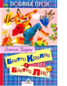

Братец Кролик и Братец Лис

Сказки: "Братец Лис и Братец Кролик", "Смоляное Чучело", "Храбрый Братец Опоссум", "Как Братец Кролик перехитрил Братца Лиса", "Сказка про лошадь Братца Кролика", "Как Братец Кролик опять перехитрил Братца Лиса" и т. д. Художник С. Бордюг. Перевод и обработка М. Гершензона. Для чтения детям взрослыми.